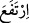
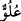
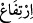
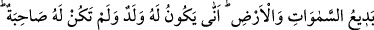
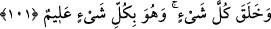

Hristiyanlar: “Mesih Allah’ın oğludur.” ve Araplardan bir kısmı da: “Melekler Allah’ın
kızlarıdır.” dediler.
“Hâşâ! O, onların vasfettikleri şeyden” ortağı ya da çocuğu olmaktan “münezzehtir”
Allah Teâlâ zatına uygun bir şekilde bütün bunlardan münezzehtir “yücedir” uludur.
Allah Teâlâ’nın sıfatları hakkında (
) kökünden kelimeleri kullanmak câiz, (
)
kökünden kelimeleri kullanmak ise câiz değildir. Çünkü (
) yani yücelik, güçlü ve
muktedir olmakla olur. (
) yani yükselme ise yön ve mekân gerektirir.
“Münezzeh” ve “yüce” olmakda uzaklık mânâsı olduğu için âyette “onların vasfettiği
şeyden” buyurulmuştur.
101. O, göklerin ve yerin eşsiz yaratıcısıdır. O’nun eşi olmadığı halde nasıl çocuğu
olabilir! Her şeyi O yaratmıştır ve her şeyi hakkıyla bilen O’dur.
“O, gökleri ve yeri benzersiz olarak yaratandır.” Yani, Allah âlemin ulvî ve süflî iki
bölgesini de önceden bir örneği olmadan mutlak olarak etkili bir madde olmaksızın
yaratmıştır. Allah bir şeyden etkilenmekten münezzehtir. Baba ise çocuğun aslı olup
maddesinin ona intikali sebebiyle ondan etkilenir. Onun için Allah’ın nasıl olur da
çocuğu olur?
Bu cümlenin mânâsının “O’nun gökleri ve yeri, eşsiz bir güzelliğe sahiptir.” şeklinde
olduğu da söylenmiştir. Çünkü onlar müthiş bir biçimde, üstün bir şekilde ve hoş bir
güzelliktedirler.
“O’nun eşi yokken nasıl çocuğu olabilir?” Doğum için gerekli şartlar bulunmadığı
halde nereden ve nasıl Allah’ın çocuğu olsun? Çünkü, İsa, (a.s.)’da olduğu gibi çocuğun
babasız meydana gelmesi mümkün olmasına rağmen, anasız meydana gelmesi
imkânsızdır. Mesnevî’de şöyle denilmiştir:
O ezelde “doğmadı da, doğurmaz da”
Ne babası vardır, ne oğlu, ne de amcası
“Her şeyi yaratan O’dur.” Mevcudatın tamamı ve bu arada Allah’a nisbet edilen
oğul da Allah’ın yaratması ile vücud bulmuştur. Yaratılanın Yaratan’ın oğlu olması nasıl
tasavvur edilebilir?
Feleklerin, yıldızların yüce yaratıcısıdır
Hem de insanların, şeytanların, cinlerin ve kuşların